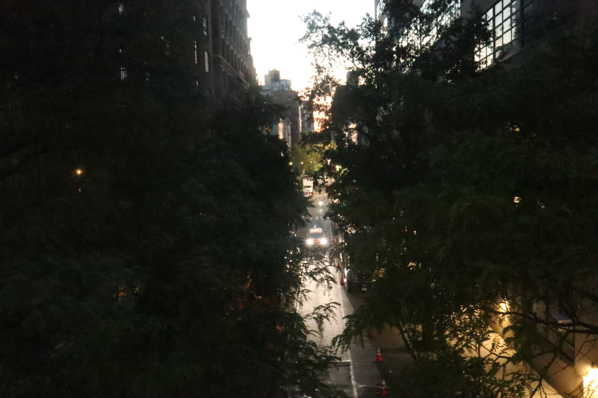
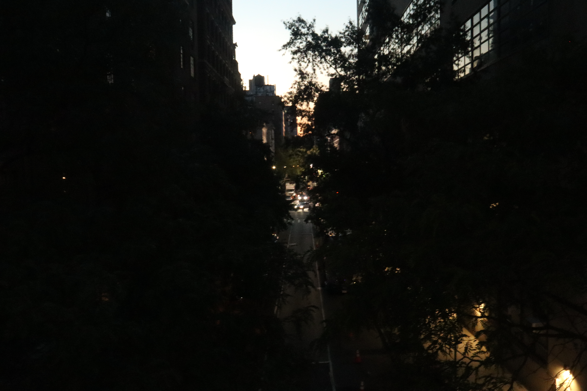
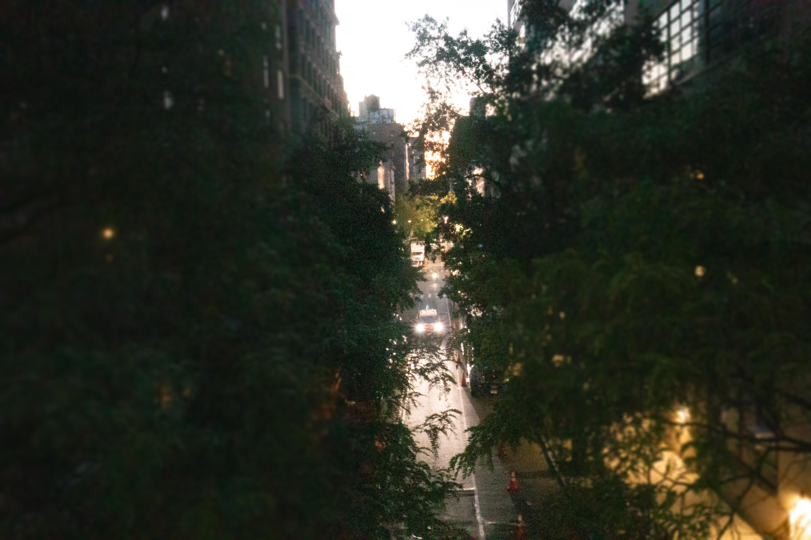
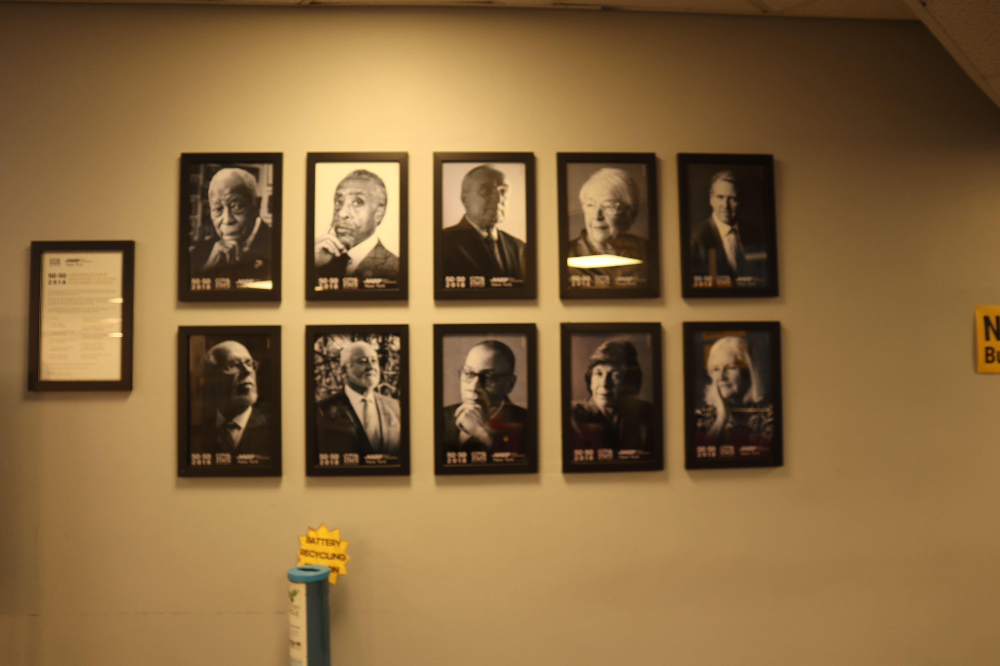
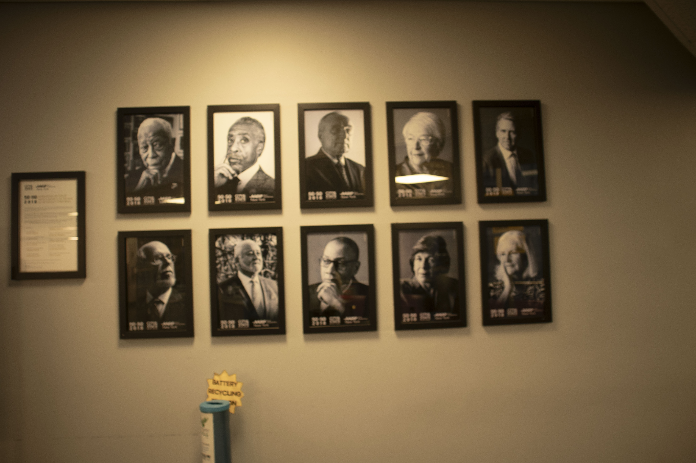
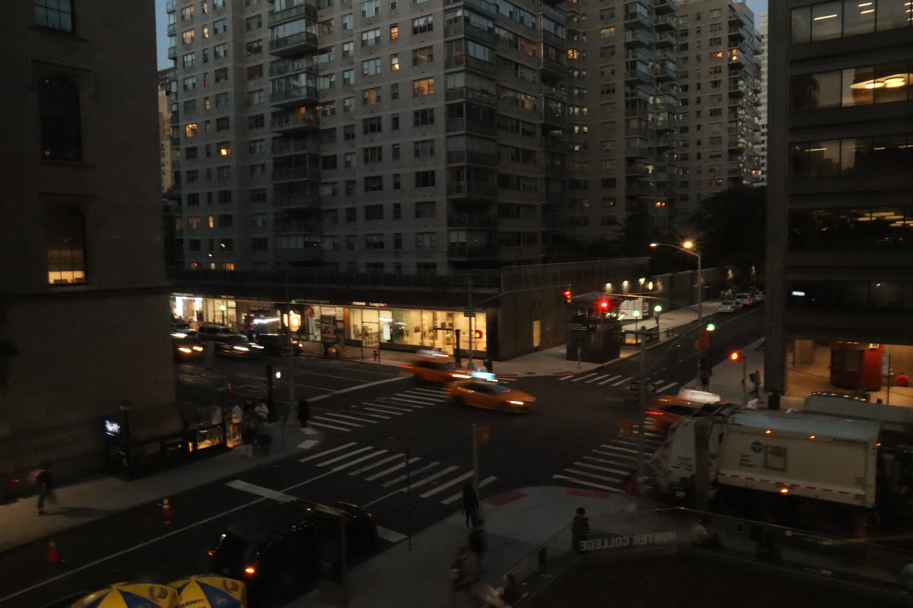
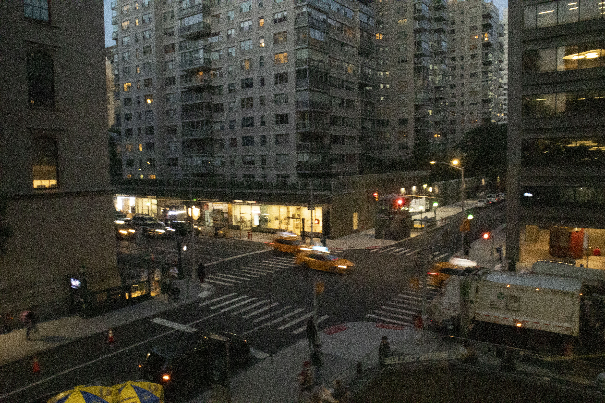

For this assignment I was focused on playing around with the settings to be able to capture the different depth of fields, I started off with taking some test images and then capturing images I found interesting. However, since I already took pictures around Hunter for the previous assignment I wasn’t sure what I wanted to capture this time around."
My images for the first part of the assignment were the last pictures I took but are my favorite. I loved how I was able to capture the taxi at just the right moment between the trees. I feel the photoshopped blur enhances the image even more and adds a nice touch to the picture. For the second part of this assignment the image of the portraits was something I hadn’t paid attention to when I walked past it, however when looking for something to capture I noticed Al Sharpton and decided to take a picture, the way the portraits were taken was something that I noticed and I found intriguing. While editing it in photoshop I already liked the slight vignette that was already captured, I decided to enhance it and remove the orange tint and a sign that ended up in the picture. For my other photo that was included in part 2 I took it without much thought, I ended up loving the motion blur of the taxi in the center and its symmetry with the building which is what made me want to feature it in my assignment."
Homepage